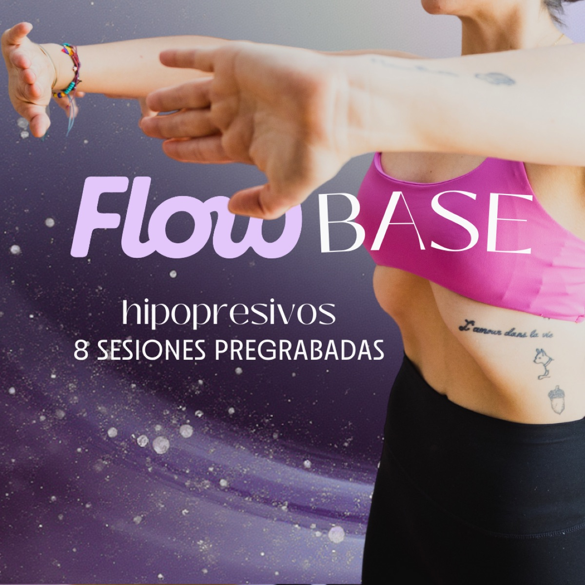
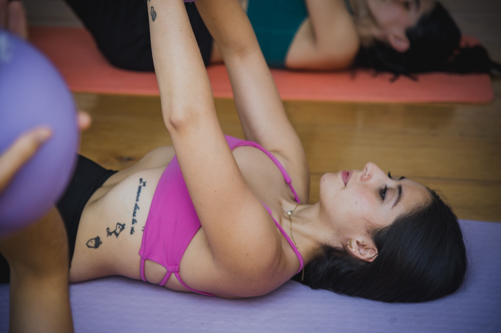

Si llevas tiempo sin moverte, este es tu primer paso. En 4 semanas aprendes desde cero a respirar, a acomodar tu postura y a activar tu abdomen desde adentro, en casa y en tu horario.

Aquí lo primero es que tu cuerpo funcione bien. Lo estético llega después, como consecuencia.
Qué es el tono, beneficios de los hipopresivos y recomendaciones importantes antes de empezar.
Explicadas paso a paso, en texto detallado.
La respiración que usamos en cada sesión, explicada desde cero, en texto detallado.
De 20 a 30 minutos cada una: 2 por semana durante 4 semanas.
Acceso inmediato después de pagar. Las sesiones quedan disponibles en tu cuenta de nas.com sin fecha límite.
Este no es un ejercicio que acelere tu corazón ni que te deje empapada. Es un ejercicio que te conecta contigo, con cómo se siente tu cuerpo desde lo más profundo. Como trabajas con la respiración, ayudas a tu sistema nervioso a salir del modo alerta y a encontrar la calma. Vas a terminar más ligera, no agotada.

Soy instructora de hipopresivos y doy clases en Pump&Flow, en Morelia y en línea.
Un día, manejando en carretera, tuve un ataque de ansiedad muy fuerte. Sentí que no iba a llegar, que no tenía el control del coche, que iba en automático y desprendida de mi cuerpo. Después de eso empecé a practicar hipopresivos, y la respiración me ayudó a encontrar la calma y a que mi sistema nervioso se tranquilizara.
Por eso, para mí lo más importante es que tu cuerpo funcione y que te sientas bien dentro de él. Eso es lo que te quiero enseñar, desde tu primera respiración.
Los hipopresivos no sustituyen la atención médica ni psicológica.
Sentí cómo mi abdomen se fue activando sin hacer miles de abdominales. Mi espalda dejó de dolerme. Mi postura mejoró y comencé a caminar más erguida.
Antes solía sentir incomodidad y pequeños escapes. Practicándolos solo un par de días a la semana, en escasas 3 semanas noté una gran diferencia. Mi suelo pélvico se siente más fuerte.
Como mamá que tuvo parto natural, no había podido recuperar la fuerza de mi piso pélvico. Ahora ya no me pasa con la misma intensidad de antes. Me encanta sentirme fuerte de la mano del control de mi respiración.
Mi postura ha mejorado, ha reducido mi dolor de espalda y mis cólicos han disminuido.
La postura y el dolor de cuello y hombros ha mejorado muchísimo.
Mis medallas de este año son gracias a tus clases. Cuando siento que ya no puedo, las recuerdo y logro terminar todo.
Desliza para ver más →
Si tienes dudas sobre tu caso, escríbeme por WhatsApp antes de comprar.
No. El curso empieza desde cero, con las pautas posturales y respiratorias explicadas paso a paso.
Entre 20 y 30 minutos.
Dos veces por semana, dejando días de descanso entre sesiones. Así completas las 8 sesiones en 4 semanas.
Ropa cómoda, un tapete y un espacio tranquilo.
Sin fecha límite: las sesiones quedan en tu cuenta de nas.com para que las repitas cuando quieras.
Poco. El trabajo es profundo e interno.
Los hipopresivos trabajan tu abdomen y tu suelo pélvico sin aumentar la presión dentro de tu barriga. Si tienes un diagnóstico, cuéntame tu caso por WhatsApp antes de empezar.
Déjame tus datos y te escribo para resolver tus dudas y ayudarte a saber si el curso es para ti.
Ya tengo tus datos. Te escribo pronto por WhatsApp.
Tu cuerpo no está roto. Está esperando que alguien lo entienda.